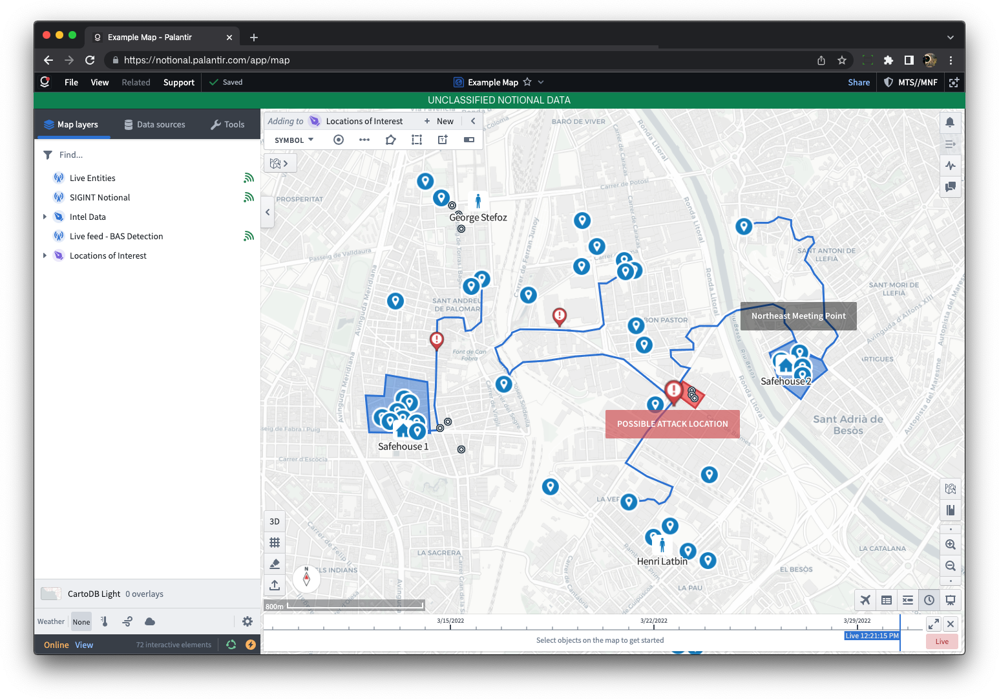
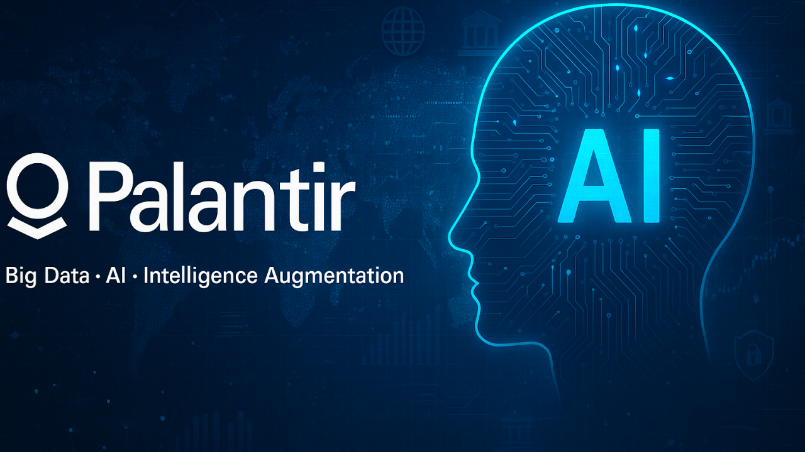

Оборона

Платформа Gotham допомагає військовим аналізувати дані та планувати операції.
Зв'язок з державними органами: контракти з Міністерством оборони США.

Платформа Gotham допомагає військовим аналізувати дані та планувати операції.
Зв'язок з державними органами: контракти з Міністерством оборони США.
Об'єднання даних лікарень для керування чергами, ліжками та ресурсами.
Зв'язок з державними органами: контракт із NHS England (Велика Британія).
Платформа Foundry поєднує дані виробництва, логістики та фінансів компаній.
Зв'язок з державними органами: дотримання регуляторних вимог щодо даних.

Платформа AIP підключає мовні моделі до даних організації з контролем доступу.
Зв'язок з державними органами: використовується державними та військовими установами.